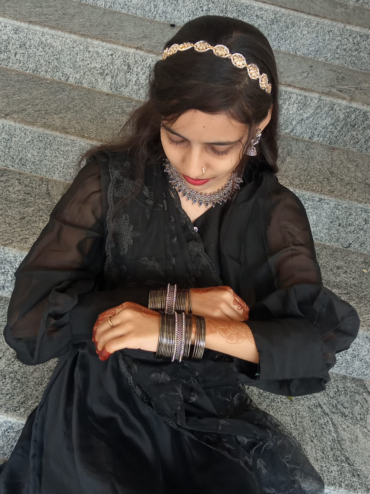
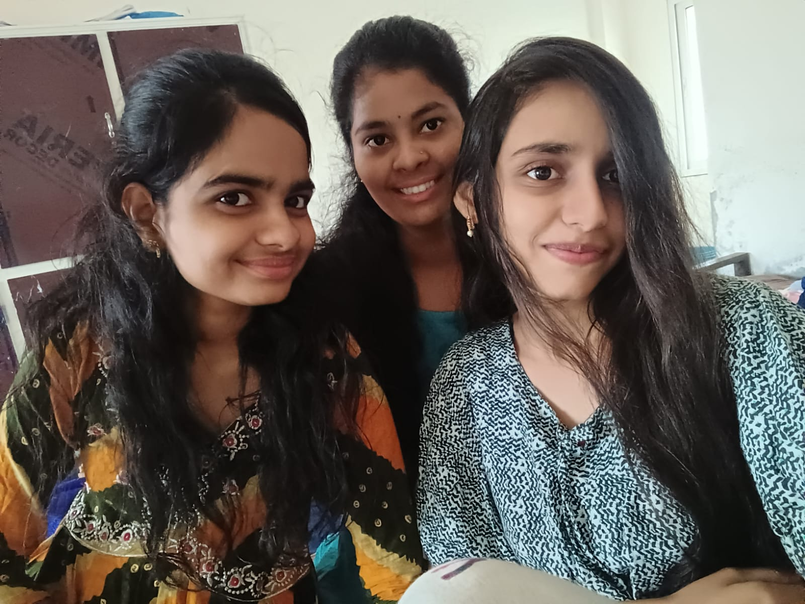
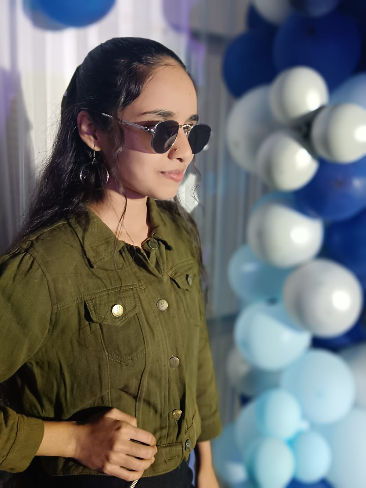
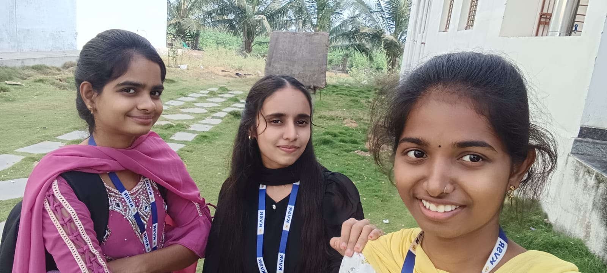

YEAR ONE
Where It All Began
My first year was the beginning of a completely new chapter in my life. For the first time, I left home to pursue my studies and stepped into an unfamiliar world filled with new faces, new surroundings, and new experiences. I came to college knowing almost no one, and the people who were once strangers slowly became friends who made the journey special. Hostel life taught me how to live independently, manage things on my own, and adapt to a completely different environment. From the first day of college and first classes to late-night conversations, shared meals, homesickness, laughter, celebrations, and countless little moments, every experience became a memory. Along with academics, my first year taught me independence, friendship, confidence, and how to find my place in a new world.
.jpeg)




.jpeg)
.jpeg)


.jpeg)
YEAR TWO
Finding My Direction
The second year was when college started becoming more than just academics. I began understanding technology better, exploring programming, working on projects, and discovering the areas I genuinely enjoyed. Hostel life brought a completely different experience — late-night conversations, shared meals, friendships, celebrations, and learning to live independently. I also got opportunities to take responsibility, work with others, and develop leadership skills. From handling challenges and managing time to supporting my friends and taking initiative, every experience helped me become more confident and responsible. It was a year of learning not only about technology, but also about people, teamwork, leadership, independence, and myself.





YEAR THREE
Building My Skills
My third year was a time when college life became more active, challenging, and meaningful. I became more confident in my technical skills while working on projects, learning new technologies, and taking on responsibilities beyond academics. My friends became an important part of this journey, and together we shared countless moments, supported each other through challenges, and created memories that I will always carry with me. I also got opportunities to take part in organizing activities, coordinating with others, managing responsibilities, and helping with college events and examinations. Balancing projects, studies, exams, responsibilities, and friendships taught me the importance of teamwork, leadership, communication, and time management. This year was not just about building technical skills — it was about becoming more responsible, independent, and prepared for the challenges ahead.



YEAR FOUR
The Final Chapter
The final year felt different from everything that came before. Suddenly, the college that once felt like a new place was becoming a place we would soon have to leave behind. It was a year filled with project submissions, exams, deadlines, presentations, placement preparations, CSR drives, events, and countless responsibilities. Between all the pressure, there were still moments of laughter, endless conversations with friends, unexpected situationships, last-minute plans, hostel memories, and the little moments we never realized would become our last. The hostel that had once been a completely unfamiliar place had become a second home, and the people who were once strangers had become some of the most important parts of the journey. Slowly, the final days arrived — last classes, last meals together, last walks around campus, farewell celebrations, and emotional goodbyes. Every corner seemed to carry a memory. Saying goodbye to friends, hostel life, teachers, and the college itself was difficult because we weren't just leaving a campus; we were leaving behind a chapter of our lives. Year Four taught me that endings are never just endings. They are a collection of memories, people, lessons, and moments that stay with us long after we leave. Four years came to an end, but the memories will always remain a part of my story.



2022 — 2026
One Chapter Ends.
A New One Begins.
Four years. Countless memories. One unforgettable journey.